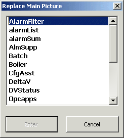
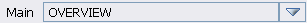

Working with pictures
This chapter explains how to perform basic tasks such as opening and replacing main pictures, moving between main pictures, using the next and previous buttons and the picture history list, printing pictures, and opening pop-up pictures.
Opening Main Pictures
When you open a main picture, you replace one main picture with another. Click the Open Main Picture toolbar button to open the Replace Main Picture dialog box. You'll see a list of the main pictures in the center of this dialog box. To scroll through the pictures, click the up and down arrows on the right side of the dialog box or click the scroll bar, hold down the mouse button, and drag the scroll bar up and down. Select the picture that you want to open, and click the Enter button. In this example, the AlmSupp picture is selected.

Replacing Main Pictures
There are a few other ways to replace the main picture. In addition to using the Open Main Picture toolbar button, you can use one of the following:
the Main History list
the Open Last Display button
the Previous and Next buttons
The Main History List
The Main field on the toolbar lists the name of the current picture. In the example below, the current picture name is OVERVIEW.

By clicking the down arrow next to the Main field, you can open a list of pictures, called the Main History List. The contents of the list may be different, depending upon how the engineers who designed the operator displays have decided to set up the list. The list may be either the names of the pictures most recently visited or a predetermined list of pictures selected by the design engineers.
To open the Main History List:
Click on a picture name in the list to move to that picture.
There are three buttons at the top of the Main History List: the pushpin keeps the Main History List open after a selection is made; the lock button locks the list so that it does not change; and the close button closes the list. The pushpin is a toggle switch. The best way to learn how these buttons work is simply to experiment with them.
The Open Last Display Button
Another way to move between main pictures is to use the Open Last Display button. Click this button to replace the current main picture with the last opened main picture.
The Previous and Next Buttons
The Previous and Next buttons may be available, usually in the upper left corner of the main window. These are two of the five buttons that appear on the main template used to create operator pictures. The engineers who created the picture may have defined a specific sequence for viewing pictures. If so, the Previous and Next buttons can be used to move backward or forward through that predefined picture sequence. If such a sequence was not defined, the buttons were most likely deleted from the display.
Opening Pop-Up Pictures
In addition to the Previous and Next buttons, three other standard buttons may be available (usually in the upper left hand corner) on pictures created with the main template. Again, the availability of these buttons depends on how the pictures were designed. If available, these buttons can be used to open pop-up pictures (faceplates, detail displays, and primary control pictures) for a specific data link or module on the current picture. You must first select the module or data link on the operator picture and then click one of these buttons to open the related pop-up picture.
Printing Pictures
You can send the electronic version of the picture that is currently displayed on your desktop to a printer.
Click the Printer button on the main toolbar to open the Print dialog box.
Click the down arrow in the Name field and select the printer.
Click the OK button to send the picture to the printer that you selected.